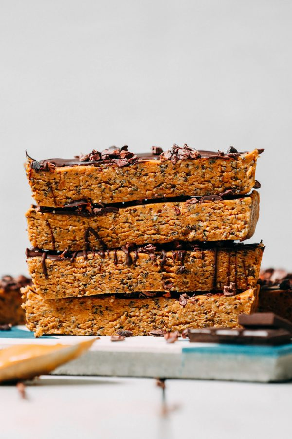

Peanut Butter Chocolate Bar

Description
A nutrionally dense chocolate and peanut butter protein bar.
Ingredients
Protein Bar
- 1 ¼ cups creamy salted peanut butter
- 5 medjool dates, pitted
- 2/3 cup hemp seeds
- 1/3 cup chia seeds
- 1/3-1/2 cup protein powder (vanilla)
Toppins (Optional)
- 1/4 cup dairy-free dark chocolate, chopped
- 1/2 Tbsp coconut oil
- 1 Tbsp cacao nibs
Directions
- Add peanut butter and pitted dates to a food processor and pulse a few times to incorporate. Then add hemp seeds, chia seeds, and protein powder and pulse until all ingredients are well combined and a cookie dough-like texture forms.
- If too wet, add more dry ingredients of choice, such as protein powder or hemp seeds. It too dry, moisten with a little more nut butter.
- Taste and adjust flavor as needed, adding more protein powder of choice for flavor or more dates for sweetness (if adding more dates, chop first to encourage even blending). Mix again until well combined.
- Line a standard loaf pan with parchment paper. Transfer mixture into the pan and spread with the back of a spoon, then use a flat-bottomed object (such as a drinking glass) to flatten into an evenly packed, flat layer.
- Transfer to the freezer to chill for at least 10-15 minutes to help the mixture firm up. The longer it freezes, the firmer it will become.
- Optional for topping: Melt dark chocolate and coconut oil in a double boiler on the stovetop, or in 20-second increments in the microwave, stirring occasionally to encourage melting. Then drizzle over the top of bars (see photo). Top with cacao nibs for added texture (also optional).
- Once chilled, remove from freezer and cut into 12 even bars or squares.
- We recommend storing these in the refrigerator for up to 2 weeks or in the freezer up to 1 month (freezer is best!). They are enjoyable straight out of the refrigerator or freezer and tend to soften at room temperature.